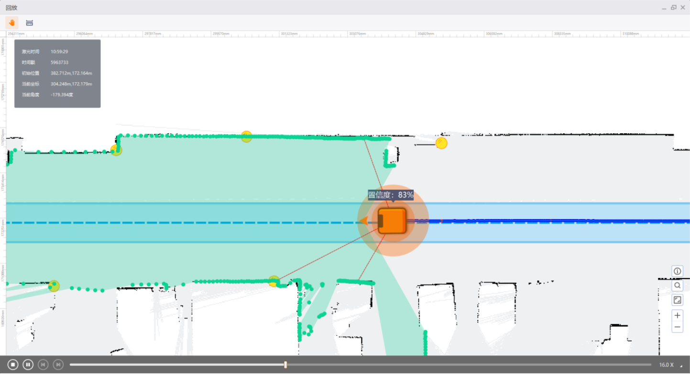
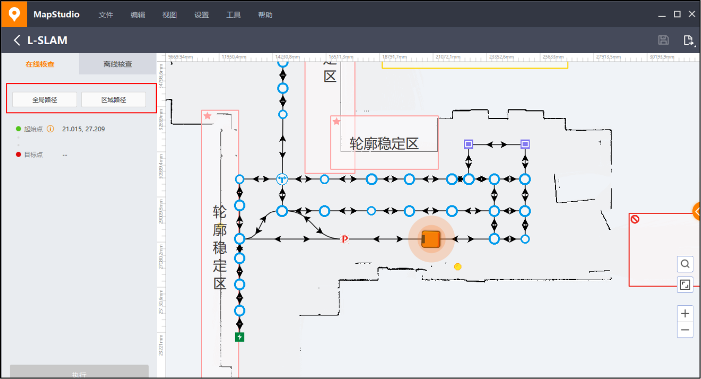
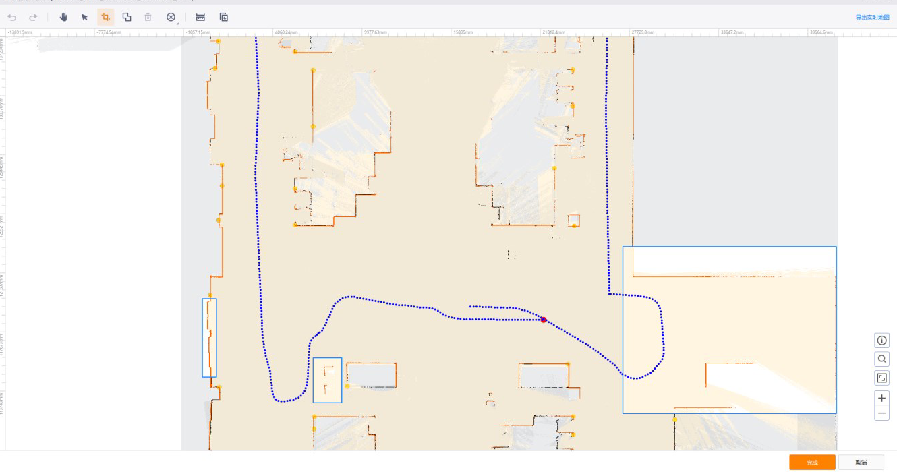
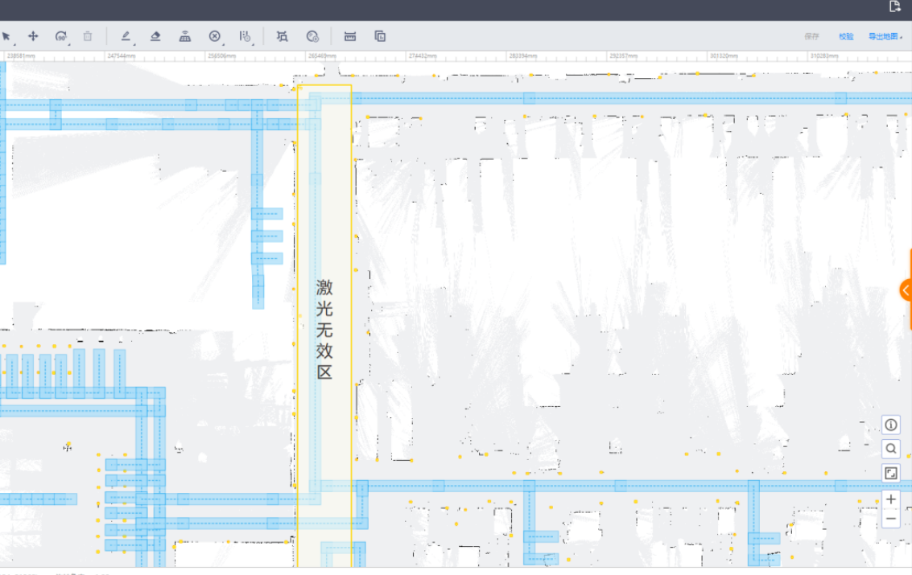

L-SLAM 地图核查与轮廓优化
现场环境变化后，机器人扫描轮廓与 L-SLAM 地图对不上，表现为置信度低、行走精度差。本篇按手册完整流程整理：日志回放定位问题、在线/离线两种地图核查、结果判读，以及用替换裁剪和融合裁剪优化轮廓、处理激光干扰。
地图与定位目录
本篇为基于厂商操作手册的原创整理，只提炼流程与判断方法，不复制原文；不同版本与控制器存在差异，结论请结合现场验证使用。
适用场景与前置条件
现场环境变化、设备添加或挪动后，地图轮廓与实际不符，机器人运行时扫描到的轮廓与原图匹配度下降（置信度低），表现为行走精度变差、主通道频繁走偏。地图核查把运行中扫描到的轮廓与核查地图对比，得到轮廓差异并标出拓扑异常点，避免重扫、拼接地图的繁琐流程。
- 地图单元内必须有拓扑地图，且至少有一张 L-SLAM 地图，否则无法进入核查。
- 在线核查需连接设备并控制其移动，目前仅支持潜伏机器人，且主控程序版本为 4.X 及以上。
- 离线核查使用离线激光数据，适合在现有轮廓内增设机台、改造墙体等场景。
如果扫描轮廓与地图轮廓只是局部差异，且差异位置恰是现场新增/挪动的物体，属于地图问题，走核查优化；如果整片轮廓突然错位、伴随定位跳变，应先查定位干扰，不要急着改地图。
阶段一 · 激光日志位置与回放
回放用于初步排查定位机器人走偏等定位相关问题，也是核查前的第一手证据。
| 主控版本 | 导航激光日志目录 | 处理方式 |
|---|---|---|
| 4.0 之前 | /mnt/slam_data | 日志需解压后才能回放 |
| 4.0 及以后 | /mnt/lidar_*/data | 无需解压，可直接回放 |
机器人有多个激光雷达时，/mnt 下会有多个 lidar 文件夹，需按导航激光名称找到对应目录，不要拿错雷达的数据。
- 点击客户端“回放”。
- 导入激光数据：4.X 主控可自动识别几个型号，4.X 之前需手动选择激光型号，确认后导入。
- 开始回放，左上角为机器人信息，右下角可调节回放速度。
- 放大地图查看细节，重点看走偏区域的轮廓。

回放判读要点
回放不是“看一眼像不像”，要按时间点读出偏差的演变过程。
- 机器人信息面板：激光时间、时间戳、初始位置、当前坐标、当前角度。先用时间戳把异常时刻与现场发生的事件（车辆经过、货物堆放）对齐。
- 两套轮廓：实时扫描轮廓（绿色）与地图轮廓（黑色）重合度高则定位正常；出现持续偏移说明定位已错，短时错位再恢复多为动态物体干扰。
- 置信度标签：机器人附近的置信度数值可直接反映匹配质量，数值低的位置就是要重点核查的区域。
- 播放速度：先用较快的速度扫全程找异常段，再放慢逐帧看跳变前后的细节。
回放只能说明“哪个时刻、哪片区域不对”，是否要改地图，还要结合现场实际：真实新增的墙体、机台才需要更新地图；可移动的人、车属于干扰，应加激光无效区而不是改图。
阶段二 · 在线核查准备：上线与重定位
在线核查需要连接设备，一边控制机器人移动一边核查地图。进入前再次确认地图单元内已有拓扑图和至少一张 L-SLAM 地图。
- 在客户端点击“地图核查”，选择要核查的地图。
- 让机器人上线：点击右侧“
<”展开隐藏界面，点击上线状态右侧的链接图标，设置服务 IP，选择与机器人在同一局域网的 IP。此操作会把机器人注册到客户端自带的 RCS 下，端口默认 28988。 - 若本机还运行着其他 RCS 和 CMS 服务，建议暂时关闭，避免端口与设备归属冲突。
- 机器人不在正确位置时先执行重定位，否则后续核查路径全部失真。
多网卡电脑上很容易选到无线网卡或虚拟网卡。选错后表现为机器人一直离线、上线状态不变化。先在系统里确认与机器人同网段的网卡地址，再填到服务 IP。
选择核查路径与 65mm 要求
路径决定核查覆盖哪些拓扑点，按实际需要选择部分或全部区域。
| 路径类型 | 覆盖范围 | 适用场景 |
|---|---|---|
| 全局路径 | 覆盖所有拓扑点 | 全场地图整体偏差、刚做完环境改造 |
| 区域路径 | 覆盖框选区域内所有拓扑点 | 只改动了局部区域，减少核查耗时 |
- 两种路径都要求所涵盖的拓扑点之间互相联通，即任意两个拓扑点之间都存在有效路径；拓扑断开会导致路径生成不完整。
- 为保证精度，需要把设备推到拓扑点中心 65mm 范围内，可借助监控客户端把车移动到点位中心。
- 车没有停进 65mm 范围时，核查结果会出现成片的假异常，先挪车再执行。

执行核查与结果判读
- 点击“执行”开始核查，过程中可以暂停，暂停后可点“继续”完成剩余地图核查。
- 点击“结束”后输出核查结果，左侧显示统计，右侧地图显示详细差异。
- 判读两个指标：异常核查点表示设备走偏或轮廓差异较大导致定位不准的位置；异常区域表示轮廓差异较大的区域。
- 地图上红点为异常核查点，蓝点为小车经过的路径。对比新地图与核查地图，确认差异是否与现场一致。
结果处理分两条路：异常较少或可接受时，点“取消”回到核查首页，此时会清除界面上所有核查结果；需要改图时，点“优化异常区域”进入地图质量优化界面。
点“取消”会清空全部核查结果，且没有二次确认式的恢复入口。拿不准是否要改图时，先截图留档再决定，避免重复跑一遍核查。
地图质量优化与两种裁剪
优化界面会显示异常区域，以橙色边框标识。工具栏包含撤销、恢复、浏览、选择、替换裁剪、融合裁剪、删除、特征区图层、距离测量和坐标复制。
- 撤销和恢复只作用于特征区的添加与删除，不能撤销或恢复裁剪图的增删。
- “替换裁剪”和“融合裁剪”都是框选拼接图上的一部分区域得到裁剪图，区别在于是否保留底图原有轮廓。
| 方式 | 裁剪图中已知区域 | 完成后的结果 |
|---|---|---|
| 替换裁剪 | 橙色 | 用该区域替换底图蓝框内原有轮廓，更新为实时轮廓，不保留底图内容 |
| 融合裁剪 | 灰色 | 保留底图原有轮廓，同时融合新增的实时轮廓信息 |
| 不裁剪直接完成 | — | 新地图整体替换到底图上 |
两种裁剪得到的预览都显示蓝框区域内最终会呈现的轮廓状态，点“完成”后才真正写入。

撤销/恢复不覆盖裁剪操作。动手裁剪前先在“另存地图”留一份原始底图，裁剪顺序建议从边缘到中心、一次只处理一块异常区域，避免一次框选过大导致现场未变的轮廓被实时轮廓覆盖。
离线核查完整流程
现场在现有地图轮廓内增设机台、改造墙体等，可用离线核查优化地图，无需把车开上线。
- 点击“地图核查”，选择核查地图，点击“确定”。
- 点击文件夹图标，导入激光数据，点击“执行”。核查一般关闭里程计和反光板，避免当前轮廓和反光板对核查数据造成影响。
- 过程中观察轮廓差异区域与实际是否符合：黑色为底图轮廓，红色为核查出的当前轮廓线。
- 核查完成后点击“优化异常区域”。
- 点击裁剪按钮，框选要覆盖到底图的增补区域，点击“完成”。
- 出现断层检测时点击“确定”，处理轮廓断口。
- “另存地图”到本地，保存拼接后的新图。
- 退出编辑时选择“否”，因为已经另存一份，避免对底图进行改动。
定位干扰的典型排查（案例）
某项目机器人主通道频繁走偏，回放后按时间线还原了干扰过程：
- 回放走偏区域：机器人扫到的轮廓（绿色）与地图轮廓（黑色）出现明显偏差，说明定位已经错误，且机器人前方还有另一条轮廓线。
- 11:00:59：人工叉车出现在机器人左侧。
- 11:01:09：人工叉车走到机器人前方，轮廓开始与地图偏离。
- 11:01:11：机器人定位出错，偏差显著扩大。
结论是前方人工叉车对定位造成干扰，导致后续走偏。处理方式：在人工叉车运行区域添加激光无效区，把车道线外的其他物体从定位计算中排除。现场实测后主通道走偏问题解决。

无效区覆盖到机器人正常行驶的车道线时，定位特征会变少，反而更容易走偏。只框住干扰物实际活动范围，画完后必须复测该路段。
收尾与避坑清单
- 底图只读：优化完成后一定“另存地图”，退出编辑选“否”；选“是”会把改动写回底图，后续很难回退。
- 断层检测不可跳过：跳过会留下双轮廓或断口，运行时表现为局部定位抖动。
- 在线核查前确认车在拓扑点中心 65mm 内，路径所涵盖的拓扑点互相联通。
- 服务 IP 选与机器人同网段的网卡；本机其他 RCS/CMS 服务先关闭，避免 28988 端口冲突。
- 离线核查关闭里程计和反光板，否则当前轮廓会被反光板带偏。
- 异常确实来自可移动的人/车时，优先加激光无效区，不要为此改地图。
- 同一区域反复核查仍有异常，先复测该处的定位得分与反光板配置，再判断是否需要重扫地图。
① 任何裁剪、删除操作前先另存底图；② 未做断层检测、未复测走偏路段，不得把优化后的地图投入生产。
上线前核对
- 地图单元内已有拓扑地图，且至少有一张 L-SLAM 地图
- 已确认机器人型号与主控版本满足在线核查要求（潜伏车、4.X 及以上）
- 激光日志目录按主控版本取对（4.0 前 /mnt/slam_data，4.0 后 /mnt/lidar_*/data）
- 回放中已用时间戳对齐异常时刻，并区分环境真实变化与移动物体干扰
- 服务 IP 选的是与机器人同网段的网卡，本机其他 RCS/CMS 服务已关闭
- 核查前已重定位，设备停在拓扑点中心 65mm 范围内
- 所选路径涵盖的拓扑点之间均联通，路径生成完整
- 核查结果已区分异常核查点与异常区域，并截图留档
- 裁剪方式按是否保留底图轮廓选择（替换裁剪/融合裁剪），且裁剪前已另存
- 已完成断层检测并另存新图，退出编辑时选择“否”
- 确切定位为移动物体干扰时已补加激光无效区，并复测走偏路段
- 优化后的地图已上线复测，主通道行走精度恢复正常